Colors of Turkey

About Turkey
Turkey is a beautiful country that connects Europe and Asia. It is famous for its rich history, diverse culture, and stunning natural landscapes. From the historic streets of Istanbul to the magical views of Cappadocia, Turkey offers unforgettable experiences for visitors. It is also known for its delicious food, warm hospitality, and vibrant cities.
Popular Cities
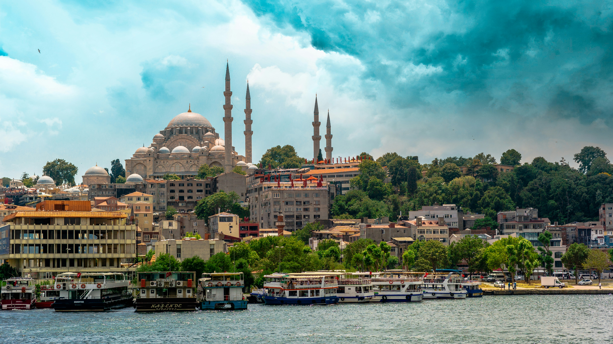
Istanbul
The heart of Turkey, full of history and culture.
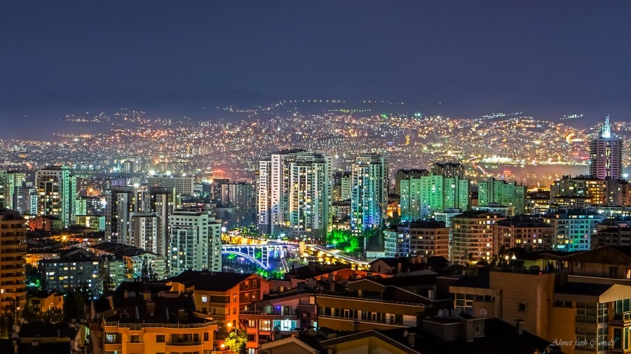
Ankara
The capital city of Turkey.
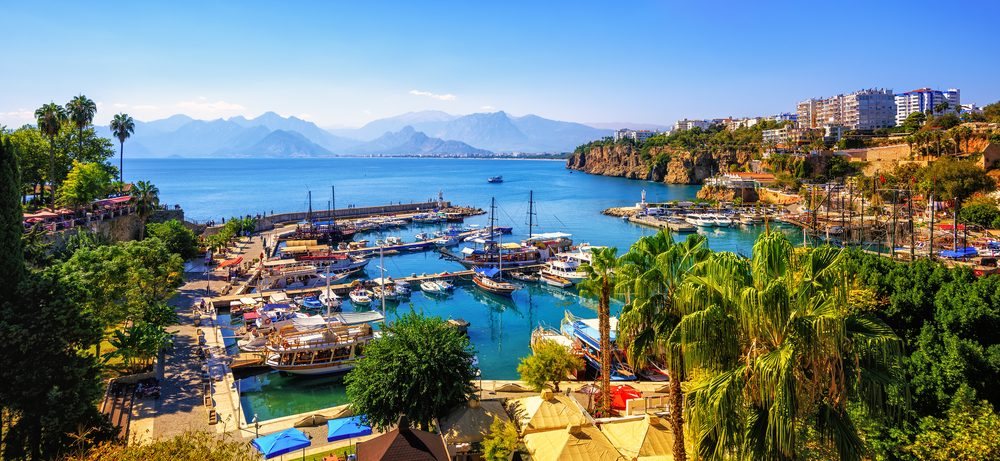
Antalya
Famous for beaches and tourism.
Famous Places 🇹🇷
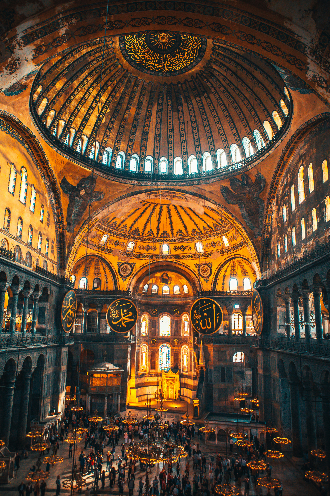
Hagia Sophia
One of the most iconic landmarks in Istanbul.
.jpg)
Blue Mosque
Famous for its beautiful architecture
Cappadocia
Known for hot air balloons
Turkish Food 🍽️
Famous Turkish dishes and desserts.
Kebab
One of the most famous Turkish dishes,
made from seasoned meat grilled over charcoal. Popular varieties include Adana Kebab,
Urfa Kebab, and Doner Kebab.
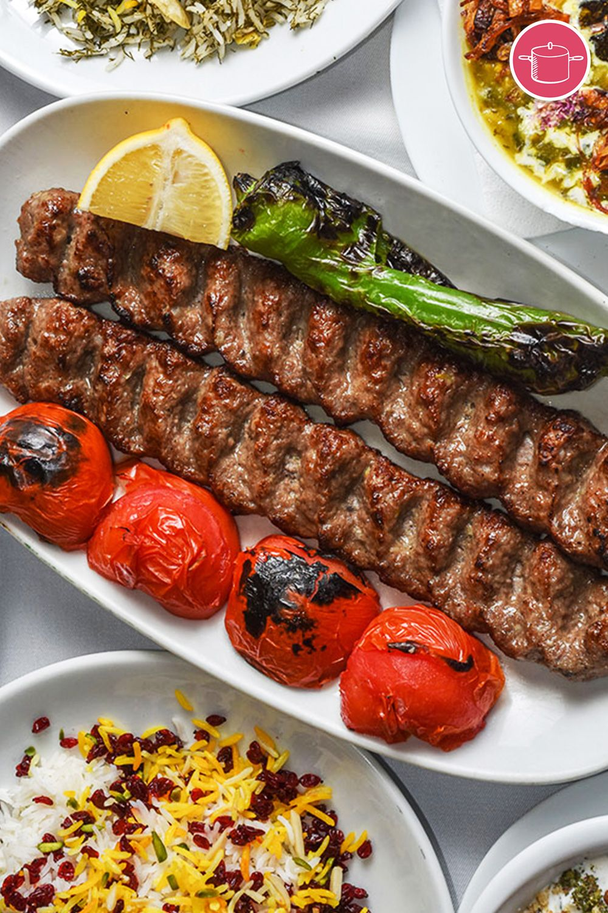
Simit
A traditional Turkish bread ring coated with sesame seeds.
It is commonly sold by street vendors and enjoyed as a breakfast or snack.
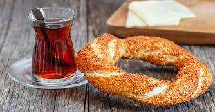
Mantı
Small dumplings filled with minced meat,
usually served with yogurt, garlic, and a flavorful sauce. It is often called Turkish dumplings.
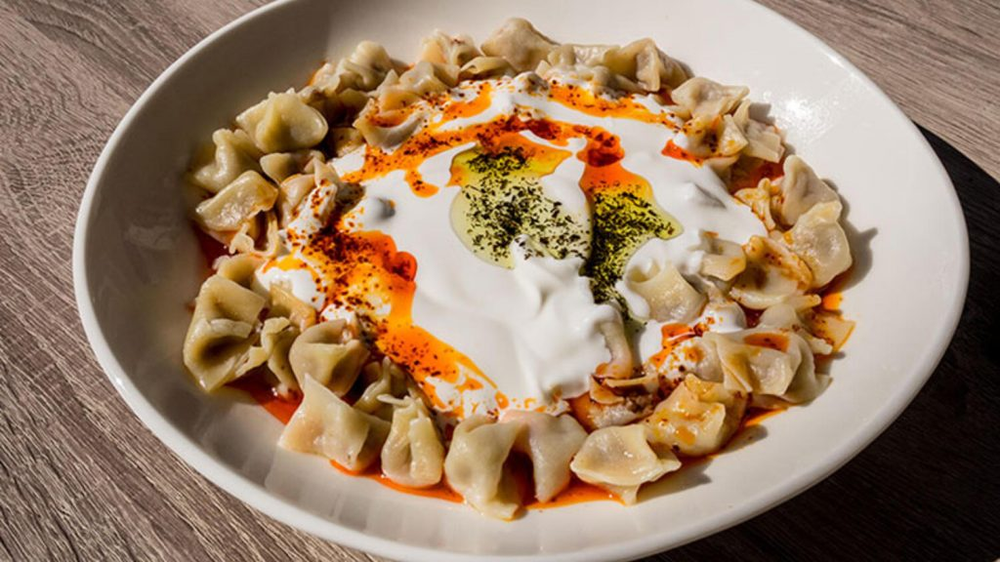
Baklava
A famous Turkish dessert made from layers of thin pastry filled with pistachios or walnuts and sweetened with syrup.
It is one of Turkey's most iconic sweets.
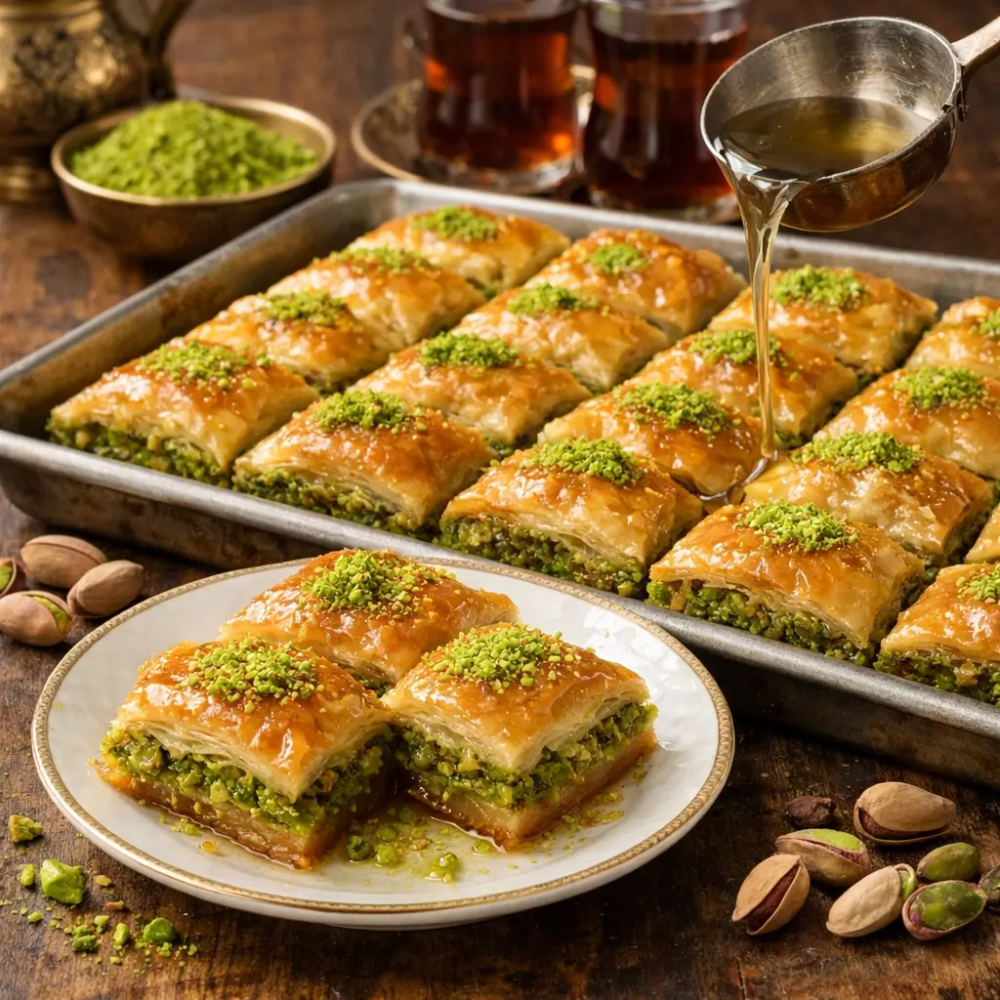
Turkey Gallery 📸

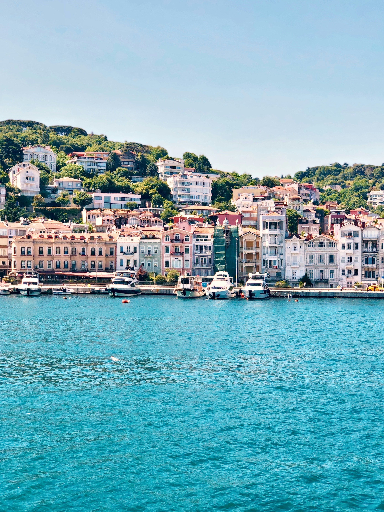
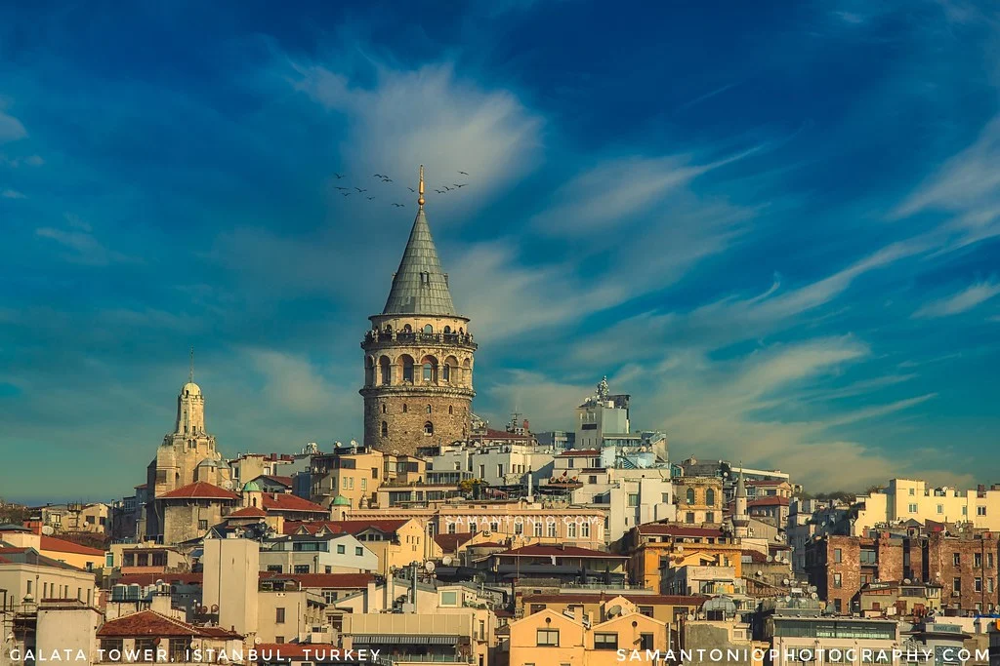
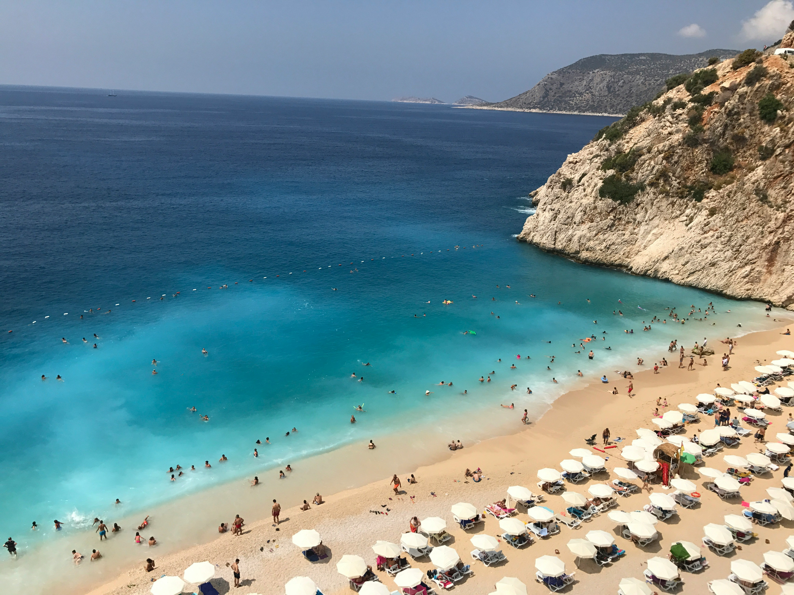
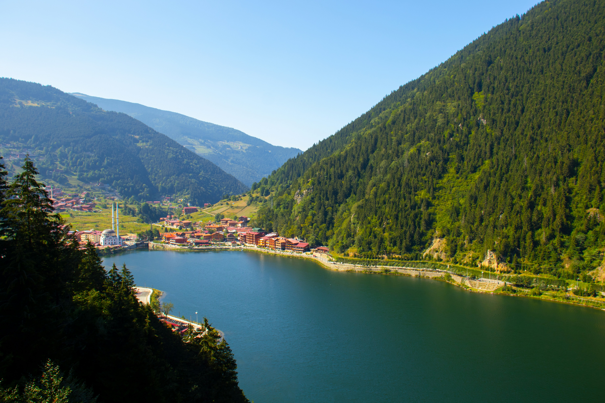

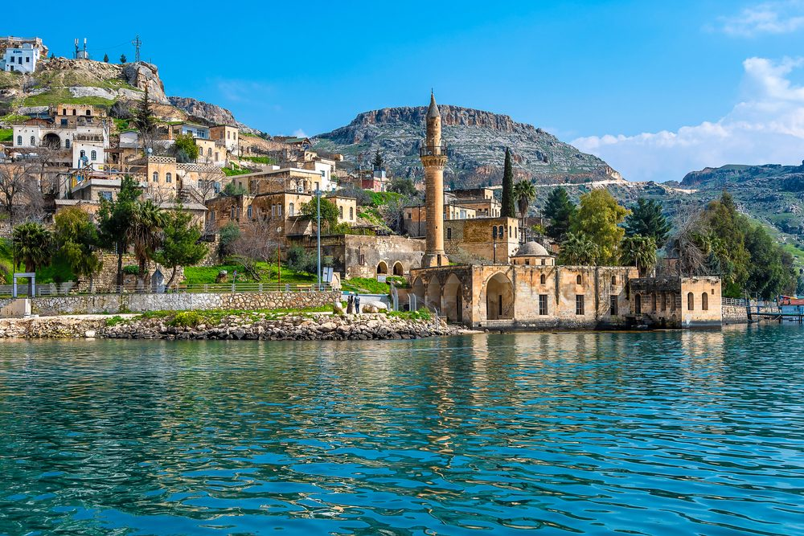